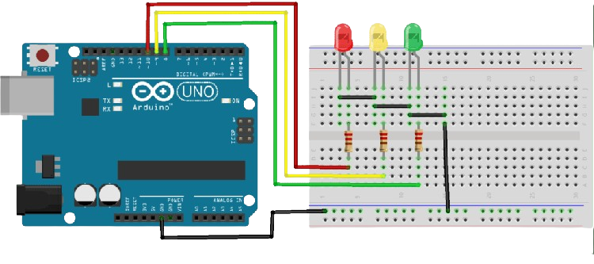

Semáforo versão básica
Montar um semáforo usando o Arduino foi desafiador, mas gratificante. Compreender os conceitos básicos de eletrônica e programação foi essencial, assim como integrar os componentes físicos ao software. Enfrentamos dificuldades no início para entender o funcionamento e sincronização das luzes, mas superamos os obstáculos com experimentação e ajustes. Ver o semáforo operando corretamente, alternando entre luzes vermelhas, amarelas e verdes, foi uma recompensa pelo esforço dedicado. Essa jornada nos ensinou sobre resolução de problemas e colaboração em equipe.
